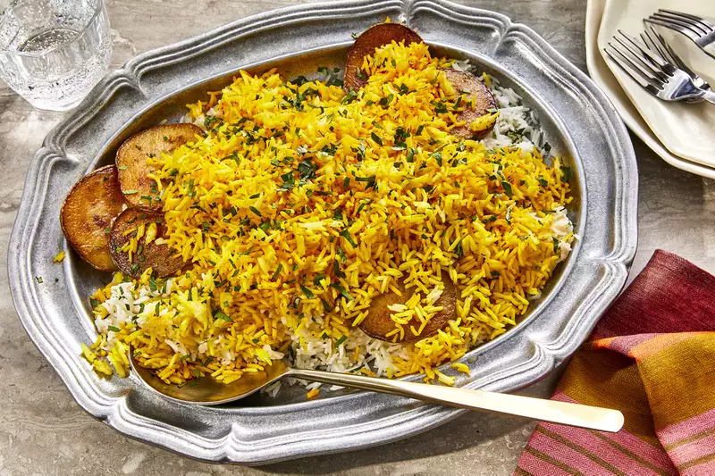

Home
Persian Rice

Description
This recipe by Chef John breaks down the processes that yield Persian rice's signature qualities: fluffy grains, the tahdig layer, and some bonus potato tahdig nestled on top. It's not quite how my grandmother makes it, but it's definitely worth trying.
Ingredients
- 3 quarts water
- 2 cups basmati rice, rinsed
- 2 tablespoons olive oil
- 1 russet potato, cut into ¼-inch slices
- 1 pinch ground cumin
- salt to taste
- 1 tablespoon chopped parsley, or to taste
Steps
- Place water and kosher salt in a pot; bring to a boil. Add rice; cook and stir for exactly 7 minutes. Drain.
- Heat olive oil in a pot over medium-high heat. Cover bottom of the pot with 1 layer of potato slices. Sprinkle cumin and salt over potatoes. Cook until potatoes are sizzling, 2 to 3 minutes; top potatoes with rice to form an even layer. Reduce heat to low and place butter slices over rice.